Trasa · pěšky
Z Letňan polní cestou
18,6 km4½–5 h↑ 40 m
zpevněná cyklostezka s alejí a polní cesty; v závěru podél silnice a brandýskými ulicemi
Pro kohoběžný chodecsenioři zvyklí chodit
Nejhezčí část Svaté cesty, bez městského úvodu. Od Letňan se jde po cyklostezce s alejí, která drží stopu staré cesty, a dál polní krajinou a vesnicemi kolem kaplí 14 až 42.
- alej na cyklostezce Letňany – Kbely
- repliky kaplí v Kbelích
- kaple v polích u Vinoře
- Brandýs a přechod přes Labe
- Start
- Letňany · metro C Letňany
- Cíl
- Stará Boleslav, baziliky
- Kaple
- 30 zastavení, z toho 20 stojících kaplí a replik
Praktické
- Pozor
- S kočárkem jen s obtížemi: polní cesty mohou být po dešti blátivé a od Vinoře se jde podél silnice.
- Občerstvení
- Obchody a hospody v Kbelích, ve Vinoři a v Brandýse; mezi nimi polní úseky bez služeb.
- Zkrácení
- Z Kbel, Vinoře, Brandýsa i Staré Boleslavi jezdí do Prahy autobusy PID.
Kaple na trase (30)
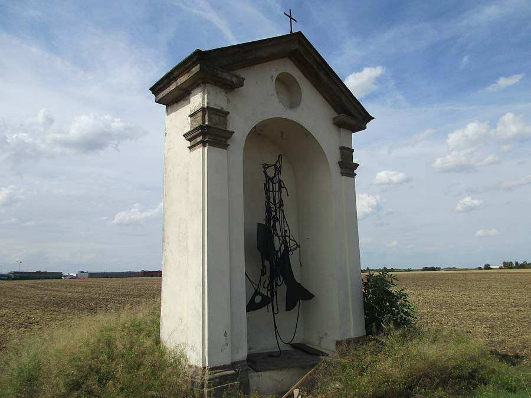
14.Jeníkovská kaple 15.Kájovská kaple
15.Kájovská kaple- 1616.Kladrubská kaple
 17.Krupecká kaple
17.Krupecká kaple- 1818.Kulmenská kaple
 19.Kutnohorská kaple
19.Kutnohorská kaple- 2020.Lauretánská kaple na Hradčanech
- 2121.Hájecká kaple
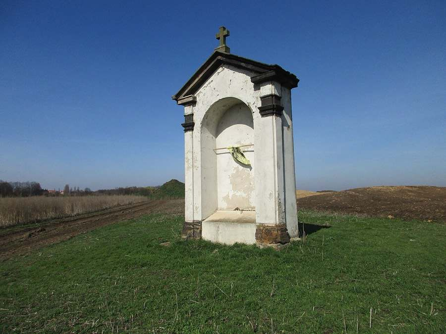
23.Nezamyslická kaple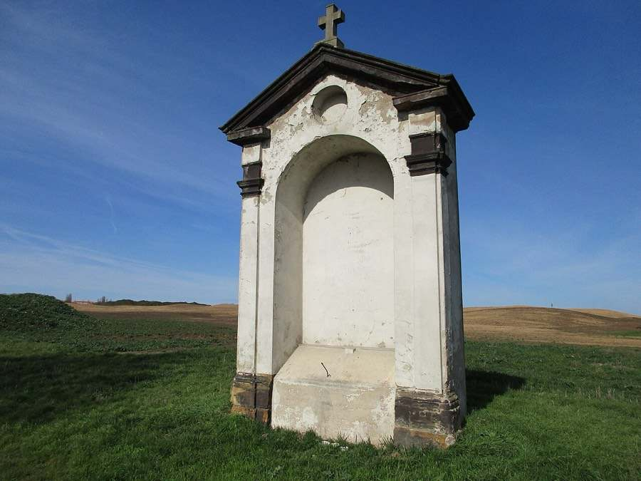
24.Nicovská kaple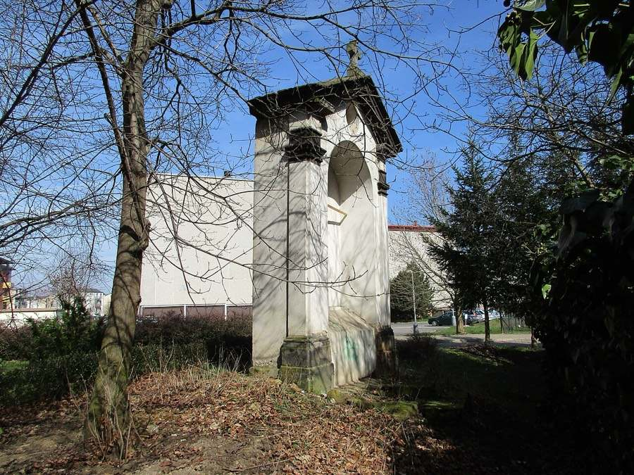
25.Obergürgentálská kaple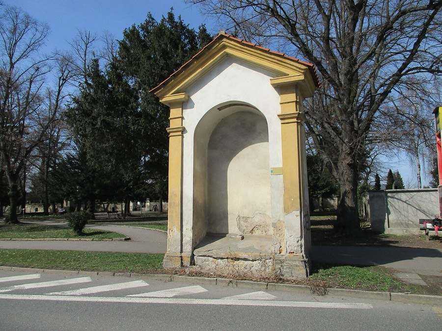
26.Pakenská kaple- 2727.Plzeňská kaple
- 2828.Svatovítská kaple
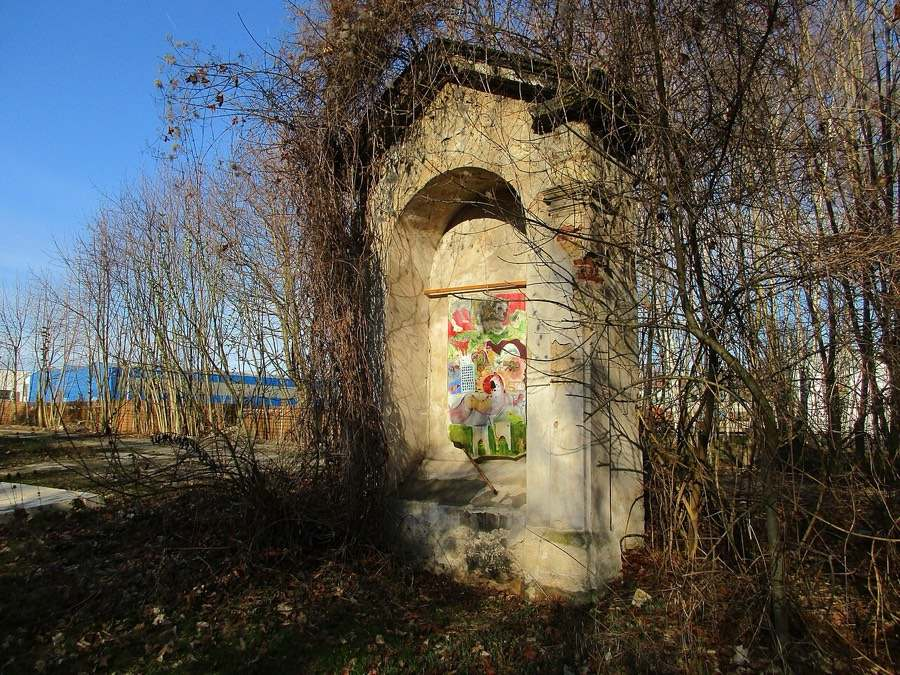
29.Svatokřížská kaple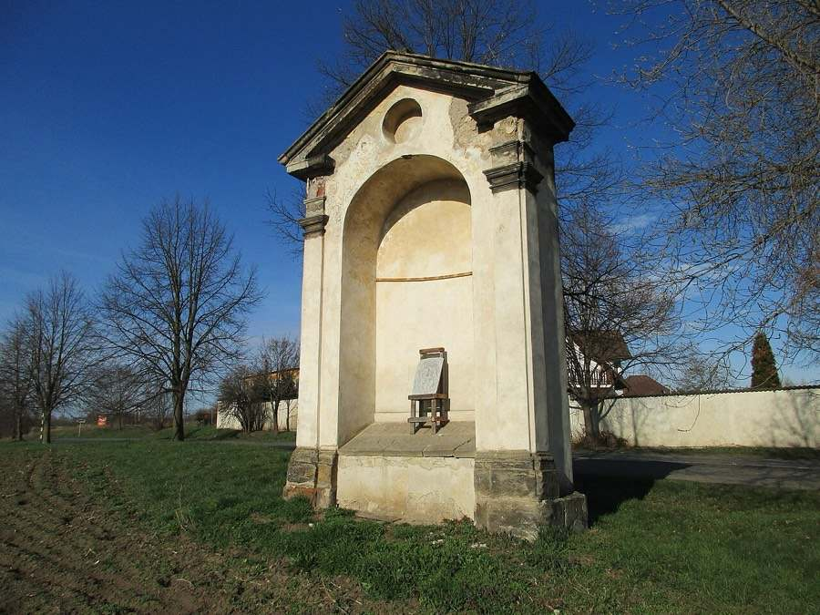
30.Svatojakubská kaple- 3131.Svatomikulášská kaple
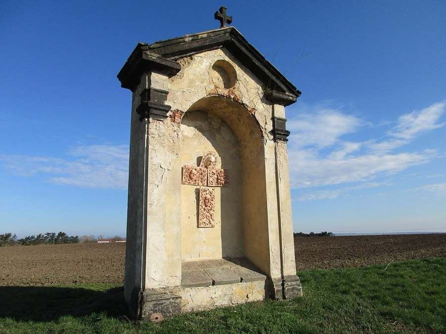
32.Rokycanská kaple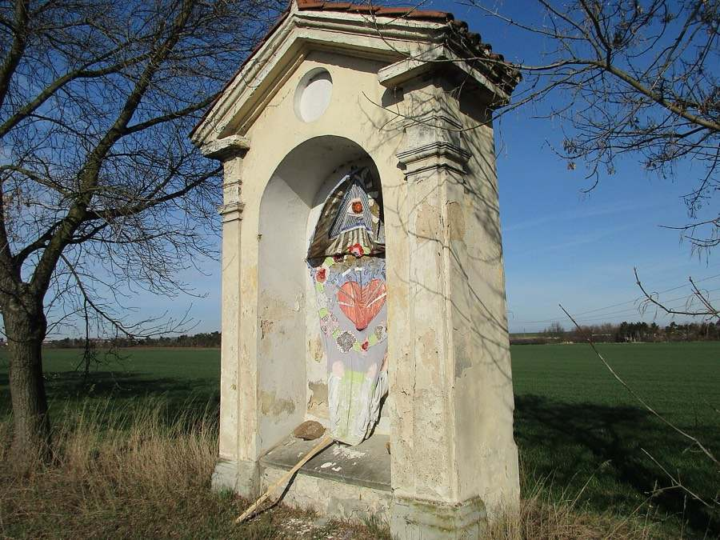
33.Římovská kaple- 3434.Svatohorská kaple
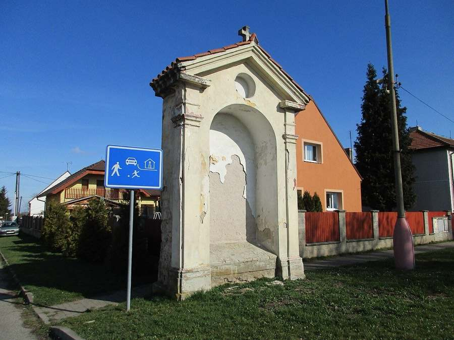
35.Sečenská kaple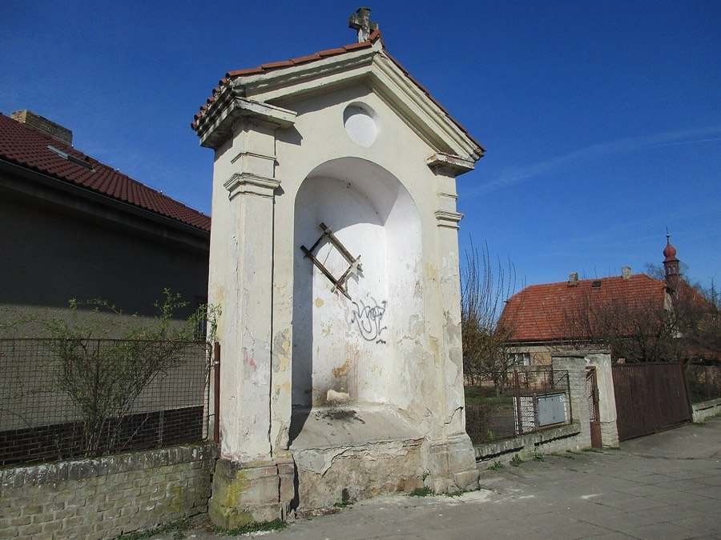
36.Sternberská kaple- 3737.Strakonická kaple
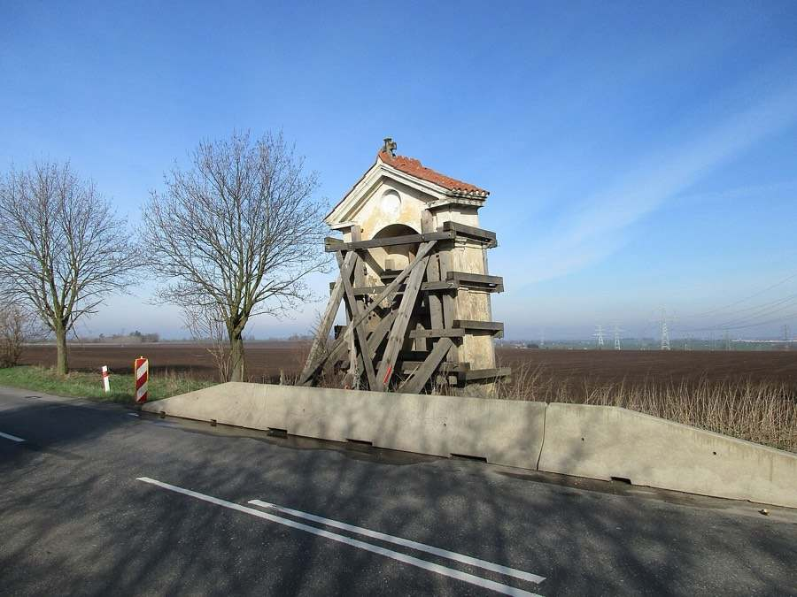
38.Strašenská kaple- 3939.Sušická kaple
- 4040.Tejnecká kaple
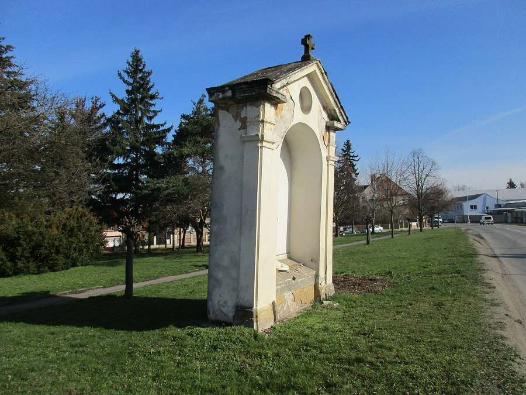
41.Vartenská kaple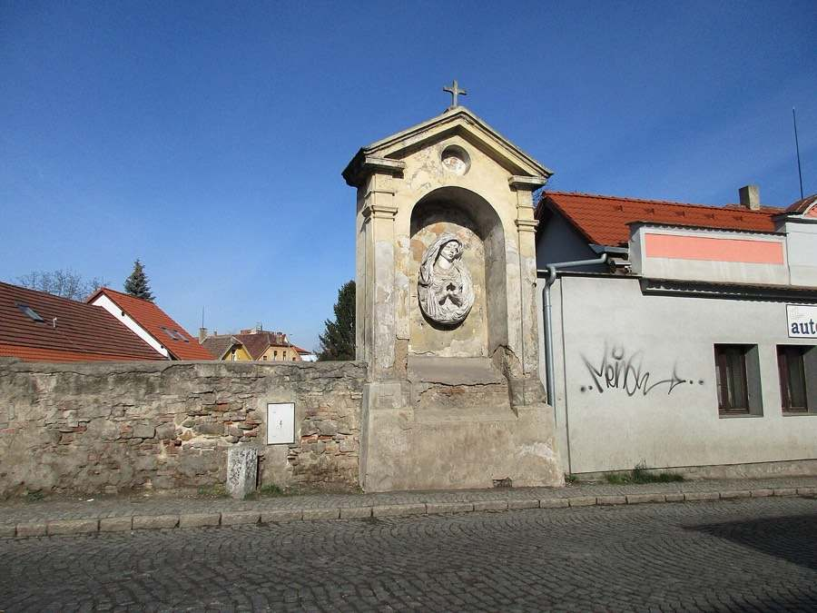
42.Vyšehradská kaple- 4343.Zbraslavská kaple
- 4444.Staroboleslavská kaple
Další trasy
- Celá Svatá cesta – 26,0 km, 6–7 h
- Kaple v polích (rodinná) – 11,5 km, 3 h
- Cyklopouť – 23,9 km, 2–2½ h
- Svatováclavská cesta z Proseka – 19,4 km, 5–5½ h